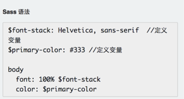
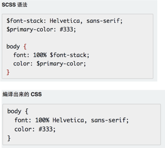
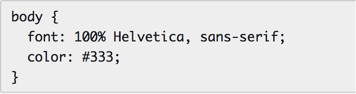
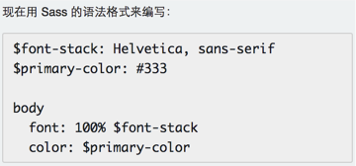
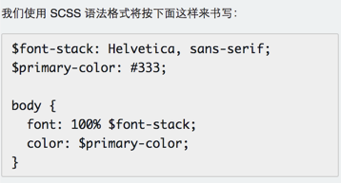
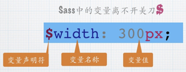

定义： CSS 预处理器定义了一种新的语言，其基本思想是，用一种专门的编程语言，为 CSS 增加了一些编程的特性，将 CSS 作为目标生成文件， 然后开发者就只要使用这种语言进行编码工作。通俗的说，“CSS 预处理器用一种专门的编程语言，进行 Web 页面样式设计，然后再编译成正常的 CSS 文件，以供项目使用。CSS 预处理器为 CSS 增加一些编程的特性，无需考虑浏览器的兼容性问题”，例如你可以在 CSS 中使用变量、简单的逻辑程序 、函数（如右侧代码编辑器中就使用了变量$color）等等在编程语言中的一些基本特性，可以让你的 CSS 更加简洁、适应性更强、可读性更佳，更易于 代码的维护等诸多好处
sass官网Sass 和 SCSS 其实是同一种东西，我们平时都称之为 Sass，两者之间不同之处有以下两点： 文件扩展名不同，Sass 是以“.sass”后缀为扩展名，而 SCSS 是以“.scss”后缀为扩展名 语法书写方式不同，Sass 是以严格的缩进式语法规则来书写，不带大括号({})和分号(;)，而 SCSS 的语法书写和我们的 CSS 语法书写方式非常类似。
|  |  |
利用gulp插件，细节看gulp一章，或者安装Ruby
这里说的 Sass 语法是 Sass 的最初语法格式，他是通过 tab 键控制缩进的一种语法规则，而且这种缩进要求非常严格。另外其不带有任何的分号和大括号。常常把这种格式称为 Sass 老版本，其文件名以“.sass”为扩展名。 在整个 Sass 代码中，我们没看到类似 CSS 中的大括号和分号。 注：这种语法格式对于前端人员都不太容易接受，而且容易出错
  定义变量的语法
SASS 中的嵌套主要说的是选择器嵌套和属性嵌套两种方式，正常项目中通常使用的都是选 择器嵌套方案 【注】在嵌套的过程中，如果需要用到父元素，在 SASS 中通过&符号引用父属性